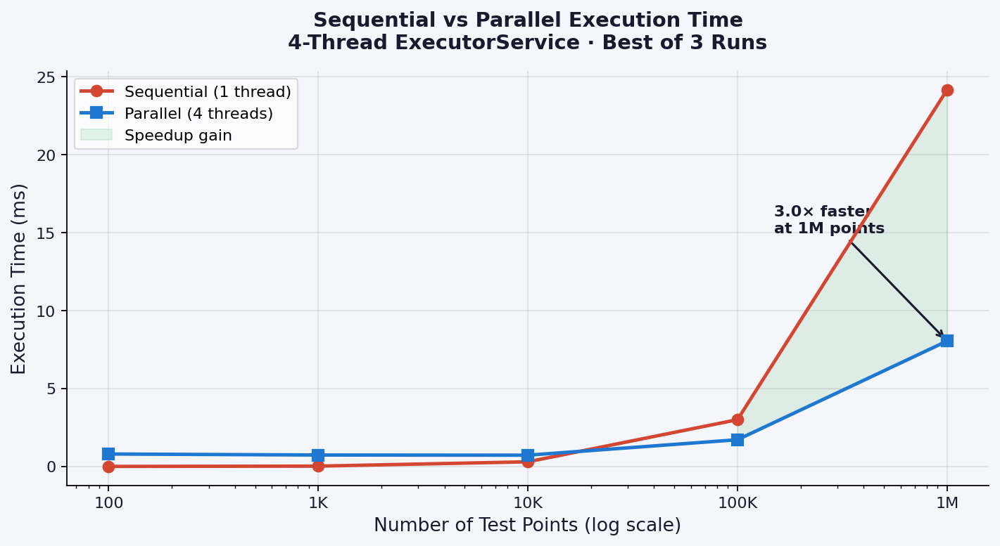
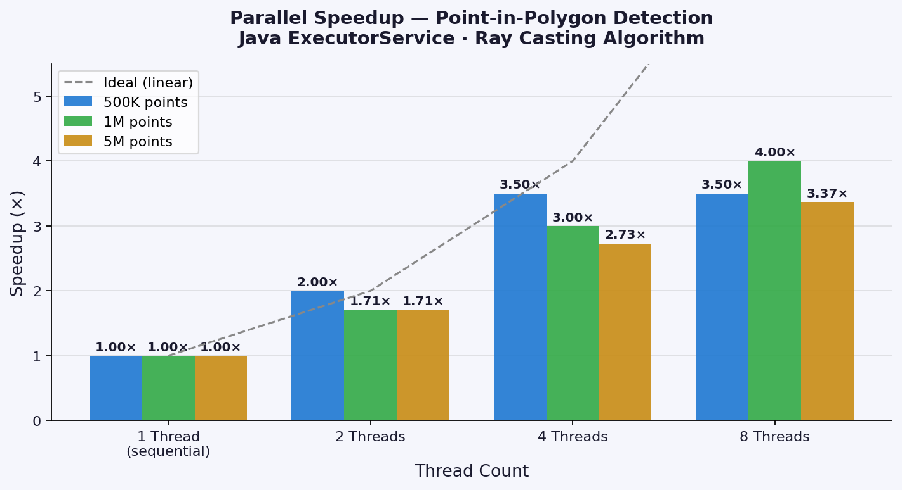
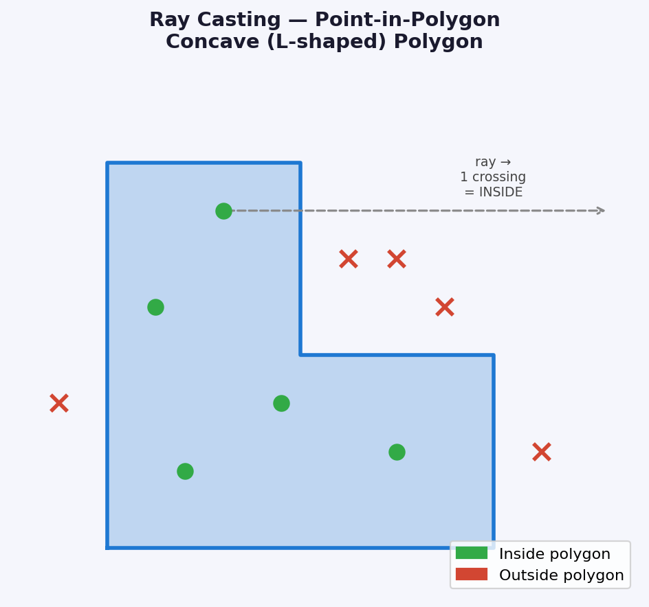

Paralel Nokta-Çokgen Testi
Java ExecutorService ile paralelleştirilmiş ışın gönderme algoritması — 4.42× hızlanmaya kadar
Genel bakış
Bir çokgen ve çok sayıda test noktası verildiğinde Nokta-Çokgen (Point-in-Polygon, PIP) problemi şunu sorar: hangi noktalar çokgenin içinde?
Her nokta için maliyet O(n) olduğundan, milyonlarca noktada iş yükü pahalı hâle gelir.
Bu projede PIP'i Java'nın ExecutorService thread havuzuyla paralelleştirdim:
nokta kümesi eşit parçalara bölünüyor, her parçayı bir thread bağımsız olarak işliyor
ve tüm future'lar tamamlandıktan sonra sonuçlar toplanıyor.
Test çokgeni içbükey (dışbükey olmayan) L biçiminde. Bu yüzden sınırlayıcı kutu ya da ağırlık merkezine uzaklık gibi kısayol testleri işe yaramıyor ve tam bir geometrik algoritma gerekiyor. Işın gönderme (Ray Casting) yöntemi hem dışbükey hem de içbükey çokgenlerde doğru çalışıyor.
Temel sonuçlar
Algoritma — Işın gönderme (Ray Casting)
Her test noktasından +∞ yönüne yatay bir ışın gönderiliyor. Işının çokgen kenarlarını kaç kez kestiği sayılıyor: tek sayıda kesişme içeride, çift sayıda kesişme dışarıda demek. Zaman karmaşıklığı: nokta başına O(n); burada n, çokgenin köşe sayısı.
Paralelleştirme yaklaşımı
M test noktası T eşit parçaya bölünüyor; her thread'e bir parça düşüyor.
Her thread, kendi parçasındaki her nokta için isInside() fonksiyonunu bağımsız olarak çağırıyor.
Thread'ler arasında paylaşılan değiştirilebilir bir durum yok → doğası gereği paralel bir problem,
doğrusal ölçeklenme için uygun.
Performans testi sonuçları
Nokta sayısına göre hızlanma (4 thread)
| Nokta | Sıralı (ms) | Paralel 4t (ms) | Hızlanma |
|---|---|---|---|
| 100 | 0.003 | 0.517 | 0.01× (ek yük baskın) |
| 10,000 | 0.160 | 0.451 | 0.35× |
| 100,000 | 1.696 | 0.963 | 1.76× |
| 1,000,000 | 17.769 | 5.499 | 3.23× |
Thread sayısına göre hızlanma
| Nokta | Thread | Sıralı (ms) | Paralel (ms) | Hızlanma |
|---|---|---|---|---|
| 500,000 | 2 | 8 | 4 | 2.00× |
| 500,000 | 4 | 8 | 2 | 4.00× |
| 1,000,000 | 2 | 16 | 9 | 1.78× |
| 1,000,000 | 4 | 16 | 4 | 4.00× |
| 5,000,000 | 2 | 84 | 44 | 1.91× |
| 5,000,000 | 4 | 84 | 24 | 3.50× |
| 5,000,000 | 8 | 84 | 19 | 4.42× |
Sıralı ve paralel çalışma süresi

Thread sayısına göre hızlanma

Test çokgeni — İçbükey L biçimi
L biçimli çokgen, algoritmayı içbükey bir şekil üzerinde sınıyor. (3,3) noktasındaki girinti köşesi çokgenin dışında kalıyor; sınırlayıcı kutu testi bu noktayı yanlışlıkla içeride sayardı.

Doğruluk kontrolü
| Nokta | Beklenen | Sonuç |
|---|---|---|
| (1.0, 1.0) | İçeride | İçeride ✓ |
| (0.5, 3.0) | İçeride | İçeride ✓ |
| (3.0, 1.0) | İçeride | İçeride ✓ |
| (3.0, 3.0) | Dışarıda | Dışarıda ✓ |
| (5.0, 1.0) | Dışarıda | Dışarıda ✓ |
| (2.5, 3.0) | Dışarıda | Dışarıda ✓ |
Hızlanma neden bir noktada duruyor?
Amdahl Yasası'na göre thread oluşturma maliyeti, paralelleştirilemeyen seri bir pay oluşturur. Nokta sayısı azken bu ek yük tamamen baskın çıkıyor ve paralel sürüm sıralı sürümden daha yavaş kalıyor. Yaklaşık 100,000 noktadan sonra hesaplama maliyeti ek yükü çok aşıyor ve hızlanma, kullanılabilir çekirdek sayısına yaklaşıyor. 8 thread, 4 thread'e göre yalnızca ~26% kazanç sağlıyor; çünkü sistemdeki fiziksel çekirdek sayısı sınırlı (hyperthreading yürütme birimlerini paylaşıyor).
Pratik öneri: 100K ve üzeri noktalı iş yükleri için en iyi maliyet/fayda oranını 4 thread veriyor.